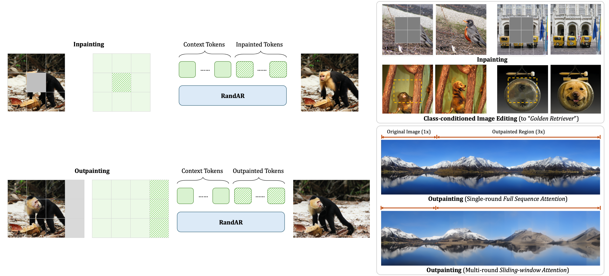
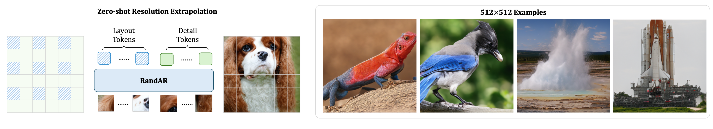
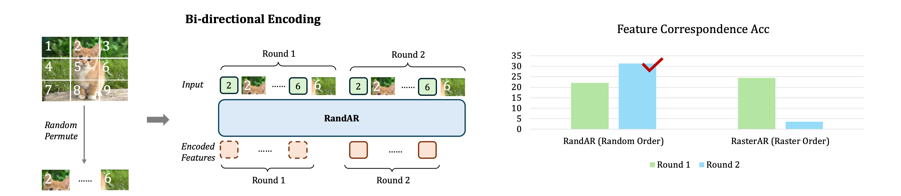

RandAR: Decoder-only Autoregressive Visual Generation in Random Orders
- Ziqi Pang 1*
- Tianyuan Zhang 2*
- Fujun Luan 3
- Yunze Man 1
- Hao Tan 3
- Kai Zhang 3
- William T. Freeman 2
- Yu-Xiong Wang 1
* Equal Contribution
TL;DR
We propose RandAR, a decoder-only AR model generating image tokens in arbitrary orders. RandAR unlocks new capabilities for causal GPT-style transformers: parallel decoding for acceleration, inpainting, outpainting, zero-shot resolution extrapolation, and bi-directional feature encoding.

Abstract
We introduce RandAR, a decoder-only visual autoregressive (AR) model capable of generatng images in arbitrary token orders. Unlike previous decoder-only AR models that rely on a predefined generation order, RandAR removes this inductive bias, unlocking new capabilities in decoder-only generation. Our essential design enabling random order is to insert a position instruction token before each image token to be predicted, representing the spatial location of the next image token. Trained on randomly permuted token sequences -- a more challenging task than fixed-order generation, RandAR achieves comparable performance to conventional raster-order counterpart. More importantly, decoder-only transformers trained from random orders acquire new capabilities. For the efficiency bottleneck of AR models, RandAR adopts parallel decoding with KV-Cache at inference time, enjoying 2.5x acceleration without sacrificing generation quality. Additionally, RandAR supports inpainting, outpainting and resolution extrapolation in a zero-shot manner. We hope RandAR inspires new directions for decoder-only visual generation models and broadens their applications across diverse scenarios.
RandAR: Enabling GPT-style Transformers for Random Orders
Inspired by the success of “next-token prediction” in language modeling, computer vision researchers have explored using GPT-style uni-directional decoder-only transformers for image generation. The typical approach tokenizes an image into discrete 2D tokens, arranges them into 1D sequences in a row-major (raster) order from top-left to bottom-right, and applies a decoder-only transformer for sequential next visual token prediction. However, enforcing a uni-directional raster order limits the decoder-only transformers from modeling the bi-directional context in 2D images -- a constraint that their encoder-decoder counterparts, e.g., MaskGIT and MAR, do not face. Fundamental questions thus remain: Is pre-defined raster-order sequencing truly a necessary and useful inductive bias for decoder-only image generators? If not, how can we equip these models with bi-directional modeling capabilities?
Previous Decoder-only AR Models are Limited to a Fixed (Raster) Order
Our RandAR Enables Random Order via Position Instruction Tokens
Random Order Unlocks New Capabilities for Decoder-only AR without Finetuning
[1] Parallel Decoding with KV-Cache: 2.5x Acceleration
Random-order generation directly supports parallel decoding: generating multiple tokens simultaneously. This significantly accelerates AR generation by decreasing the inference steps.
[2, 3] Inpainting & Outpainting
The random order ability of RandAR enables it to support image manipulation tasks of inpainting and class-conditional image editing with a uni-directional transformer. Moreover, RandAR can use full casual attention for outpainting a 256x256 image into a consistent 256x1024 one.
[4] Zero-shot Resolution Extrapolation
Trained on 256x256 images, RandAR can generate 512x512 images with finer details, enabled by a customized hierarhical generation order. Different from previous iterative outpainting, we can generate images with a unified object in high-resolution details.
[5] Bi-directional Feature Encoding
By training on random orders, RandAR have acquired the ability of understanding bi-directional contexts and lead to better feature encoding, such as for finding feature correspondences.
Conclusions
We introduce RandAR, a GPT-style causal decoder-only transformer that generates image tokens autoregressively in random orders. Our RandAR achieves this with specially designed position instruction tokens representing the location of next-token prediction. Despite the challenges of learning random order generation, RandAR achieves comparable performance with raster-order counterparts. Moreover, RandAR shows several new zero-shot applications for decoder-only models, including parallel decoding for 2.5x acceleration, inpainting, outpainting, resolution extrapolation, and feature extraction with bi-directional contexts. We hope RandAR inspires further exploration of unidirectional decoder-only models for visual tasks.
Citation
Acknowledgements
The website template was borrowed from Michaël Gharbi, Ref-NeRF, and ReconFusion.